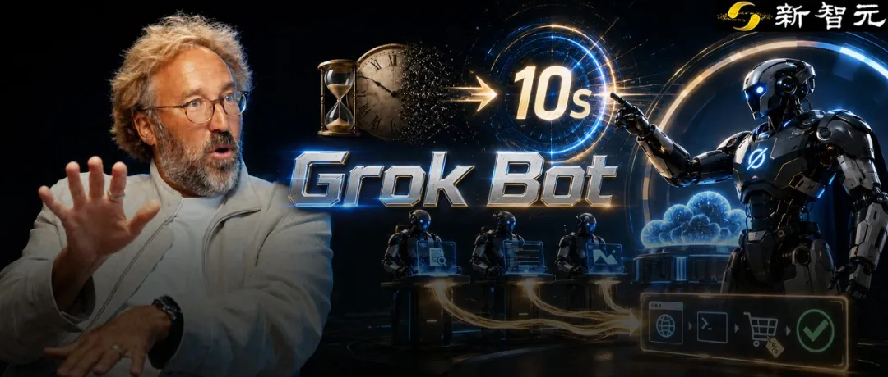
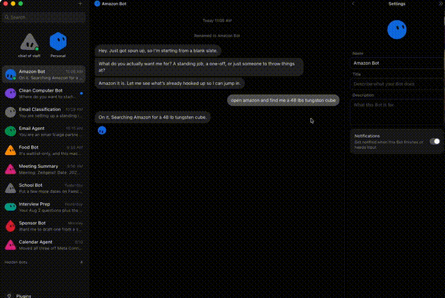
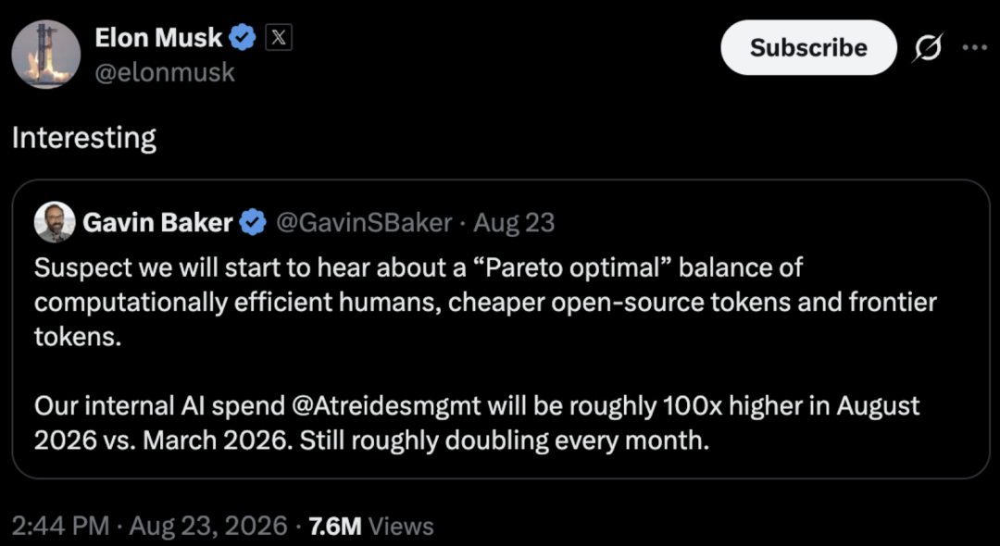

新智元报道
新智元报道

硅谷顶级投资人，在a16z对话中给出判断——
Grok Bot，就是又一次ChatGPT时刻！
在这个节目中，硅谷顶级投资机构Atreides的掌门人Gavin Baker，如此断言。
他曾花了数小时，用Claude Code精心构建了一套工具流水线。
然而，当他打开Grok Bot，仅仅用了3分钟跑出的版本，全面碾压前者！
「做播客摘要、Substack摘要、X平台情绪追踪……以前用Claude Code每一项都要折腾好几个小时，而在Grok Bot里，每个任务只用了7到12秒，而且效果好得多。」
更疯狂的是，这个曾被吐槽「一个月200刀太贵」的杀手级应用，最近突然降价到了20美元/月，甚至包含在Cursor Pro和Super Grok的订阅里！
巧的是，就在刚刚，马斯克转发了一个帖子。
有人分享说，自刚刚用Instinct和Stripe Link给侄女买了一架钢琴，全程都在消息聊天界面里自动完成。Instinct，是最近硅谷大爆的另一款Agent，热度几乎超越龙虾。
马斯克转发说：Grok Bot比它更胜一筹，因为「它不仅能帮你购物，还能主动帮你寻找并谈下最优惠的价格！」
Grok Bot，凭什么成为硅谷的下一个爆款？

如果你以为，Grok Bot只是给Grok聊天框换了个壳，那你就大错特错了。
它不是聊天机器人，而是一个能登录你所有软件、拥有独立云端电脑、能24小时不间断干活的赛博员工大队。
在Grok Bot出现之前，Hermes、OpenClaw等已有Agent工具虽然强大，但使用门槛实在是高。
你得选模型、调上下文窗口、配思考深度、搞定API密钥……95%的用户直接被挡在门外。
Grok Bot完全反其道而行之，它做到了三个极致：
极致工作流：极简免配置
你不需要选择模型，不需要挑选工具。打开软件、点击新建、开始对话，它直接给你配好最优方案。
这就实现了AI Agent有史以来最好的开箱即用。
通过现场演示，它能学习工作流程。让Bot跟着你完整走一遍多步骤或多系统路径，它就能将该路径保存为例程，并可按计划或按需重新运行。
它是一个持久化的、你叫得上名字的队友，拥有稳定的状态。命名的Bot会在多轮对话中保留记忆、文件、浏览器会话和偏好设置。上下文会不断累积，而不是在每次任务时都重置为全新的环境。
彻底的「云端电脑优先」
这是Grok Bot最硬核的底层逻辑。
每一个你创建的Bot，在云端都有属于它自己的独立电脑！
这台云电脑拥有独立的Chrome浏览器、文件系统和终端。这意味着，你可以永不关机。
即使你合上笔记本关机睡觉，你的Bot依然在云端电脑上24小时不停地跑任务。
同时，它也意味着绝对安全。
你不需要把自己的主账号和密码交给AI。通过Agent Mail（智能体专用邮箱），你可以像邀请新员工一样，把Bot邀请进你的项目、社区或工具里，赋予它有限的权限。
原生多智能体协同
过去你用AI，是一个人对抗一个对话框；在Grok Bot里，你是在指挥一个团队。
Bot与Bot之间默认具备「互相发消息」的权限。
你的「CEO智能体」接到任务后，会自动把工作拆解，发给「研究员Bot」、「代码Bot」、「设计师Bot」。它们在后台群聊、互相质问、交付产物，而你只需要在旁边坐着喝咖啡。
开发者已有5种趋同的模式：

Gavin Baker 将 Grok Bot 视作「下一个 ChatGPT 时刻」，其底层的商业逻辑非常清晰。
他承认 Claude Code 在代码生成上是重大突破。但是，这只是渐进式的效率提升，本质上仍是「指令-响应」模式（Copilot 模式）。
Claude Code / Codex 仍是反应式。虽然增强了知识和效率，但并没有把活做完。
而在他看来，真正的「ChatGPT 级颠覆」必须具备两个条件：一是使用门槛断崖式下降（从数小时压缩到十几秒），二是产出质量不仅没降反而更好。
现在，Grok Bot 正在跨越这道鸿沟：它正在从「辅助工具」进化为「主动执行者」（Auto-pilot 模式）。
它不仅能极速构建工具，还能通过观察用户的日常操作，主动提出自动化建议。
这牵出了 Baker 真正押注的商业终局——
过去的一问一答模式，算力消耗是有天花板的；但一旦 AI 开始主动接管工作流，用户只需点击「授权执行」，后台的 token 消耗量将迎来指数级、无上限的爆发！
所谓「又一次ChatGPT时刻」，指的就是这个链条。
门槛塌了（小时 → 秒）→ 质量更好 → 从增强知识变成推荐行动 → 一旦点同意执行，用量会爆炸。
GrokBot，才是真正的范式转移。
怎么用Grok Bot把自己的生产力拉满？极客们总结出了一套世界级的终极流程——脑力倾倒至反向提示词。
第一步：Pin住你的「首席之脑」
登录Grok Bot后，不要急着建一堆散乱的Bot。先创建一个主Bot，命名为「Chief of Staff」（幕僚长）或「CEO」，并将其置顶。
这个Bot就是你的唯一对接人。因为Grok Bot跨Agent调度的能力极强，日后你只需要把所有杂事一股脑扔给CEO，让它去决定分配给下属哪个专业Bot。
第二步：脑力倾倒（Brain Dump）
对你的CEO Bot进行狂暴输出，把你的一切都告诉它：「我是谁、我的公司是什么、我的痛点是什么、我每天最讨厌做的事情是什么、我的短期和长期目标是什么。」
第三步：反向提示词（Reverse Prompt）
倾倒完毕后，输入这句灵魂发问：
基于你对我所有的了解，为了最大化我的生产力，你建议我应该设置哪些专门的Bot？它们的角色、职责、运行流程应该是什么？请直接帮我把它们全部创建出来！
利用Grok Bot控制自身的权限，你的CEO Bot会在几秒钟内，自动在左侧侧边栏为你生成一整套包含头像、名字、系统提示词的「专属专家团队」！
有了团队后，Grok Bot能干什么？以下是来自前言开发者实测的11个疯狂用例。
清空邮箱I——全自动邮件分类与商单筛选
执行Bot：Scribe / Cindy（运营总监）
Grok Bot能帮你做到真正的收件箱清空。
首先，自动化定时任务，设置每天早晨7:30自动扫描过夜邮件。
然后，分级归档，将无需回复的通知、退订阅邮件一键归档。
最后，是商业价值打分：如果你是创作者或企业主，Bot会深度背景调查发件公司，剔除钓鱼垃圾邮件，为有价值的商单评分，拟好回信草稿。
闭环式的「会议助手」
开会往往是很多打工人的噩梦。
Grok Bot配合Fathom等录音工具，就可以完成以下操作。
每30分钟自动读取会议转录文本，提取你在会议中立下的「赛博誓言」，自动将Action Items分发到对应团队的Bot，并将要点同步推送至你的Telegram或Slack。
24/7社交雷达与全网趋势抓取
集成Grok Bot专属的X插件与「最近30天」深度搜索技能。
Bot可以每隔30分钟巡逻OpenAI、SpaceX、Anthropic等官方账号，一旦有重大更新发布，立即秒级抓取、总结并警报提示。从此，再也不用担心错过任何行业风口。
让AI自己「吃下」Cursor CLI，搞定跨设备编程
根据Cursor团队内部工程师透漏，他们现在直接把Grok Bot当成高级代码架构师！
Grok Bot在云端通过Tailscale网络，不仅能直接控制你本地的高配显卡机器，还能直接调用Cursor CLI和Vercel插件。
当你给出一个需求，Grok Bot会自己启动Cursor云端Agent写代码、跑CI测试，如果CI测试没过，它会不断自我修正，直到出现绿色的Pass标签才通知你合并代码！
高情商暖男：私人生活保姆
这或许是Grok Bot最让人直呼「科幻」的地方。
连接你的Google Calendar后，Bot发现你今天下午预约了物理治疗，而诊所隔壁正好有一家冷饮店。
Bot会利用云端浏览器打开外卖软件，提前为你下单一杯你最喜欢的沙冰，保证你刚出诊所门就能凭取件码拿到！
它还会扫描你预定的餐厅菜单，结合你的健康教练Bot给出的健身数据，直接列出一份「今晚最符合你碳水摄入量的点菜清单」。
告别繁琐流程，Amazon一键无脑退货
以前退货需要在亚马逊页面点好几步。现在只需对Bot说：「把昨天买的这个键盘退了。」
Bot在云端浏览器登录你的Amazon账号，自动走完退货流程，并直接把生成的退货QR码截图发到你的手机上。

拯救家长——学校海量通知自动提炼
家里有娃的都知道，学校群里每天都消息有多折磨人。
School Agent会每天晚上7点扫描邮件，自动过滤掉客套话，提炼出「明天孩子需要带什么」、「哪天需要家长签字」，并自动生成日历日程，把配偶一并拉入会议提醒。
电脑硬盘「瘦身神器」
由于Grok Bot具备本地文件权限，它可以设定每周运行一次硬盘巡检。
它会自动识别几十个G的Superhuman缓存、Docker无用镜像、Cursor本地数据库复本，清晰地列出「低风险/中风险/高风险」垃圾，你只需点一下确认，几十个G的存储空间瞬时释放。
一键公开发布（Here.now 插件集成）
内置Here.now原生插件后，无论Bot生成了图表、代码段、Markdown文档还是3D渲染图，只要你说一句「发布这个」，它会在几秒钟内生成一个即拿即用的公网URL，方便你瞬间分享给团队或客户。
全网找痛点、自动做实验的「商业探索者」
你可以给Bot极高的自由度：「去Reddit和X上看看大家最近在吐槽什么软件不好用，试着写一个极简的Web应用发布出去，看看有没有人点击和使用。」
这种自动化的「商业假设验证」，正在成为新一代AI原住民的创业基石。
Telegram/语音无缝接管一切
通过BotFather将Grok Bot接入Telegram，你可以在路上直接发语音条给你的「首席幕僚长」。
不管你是在开车还是在跑步，一句语音下达指令，云端的AI军团就开始为你打工。
在对话中，Gavin Baker给出一个惊人的行业判断。
他认为，当前市场对AI最大的误判，是认为存在AI泡沫。真正的风险恰恰相反——AI的实际需求被严重低估了，很快我们就会面临算力不够用的窘境！
Gavin Baker透露，他的公司内部AI支出，2026年的预期将是今年3月的100倍，而且仍在每月翻倍。一旦Grok Bot等Agent开始按用量计费，个人的AI支出将迎来台阶式的暴涨。

可以说，Grok Bot这样的Agent产品，彻底改变了Token的消耗范式。
以前你问ChatGPT一个问题，消耗几千个Token；现在的Grok Bot一次任务就会瞬间砸掉几百万个Token！
由此，Gavin Baker提出「算力不平等」的概念。
未来人与人、公司与公司之间的差距，不再取决于谁的大模型微调得更好，而取决于谁买得起、用得起足够多的Token和算力，去养一整支24小时不休的云端AI军团。
Grok Bot的出现，则标志着一个拐点：我们不再需要学习如何向AI提问，我们需要学习的是如何当好一个CEO。
在a16z访谈中，Gavin Baker这样感叹：「你看那些23岁的年轻人，他们使用AI的方式就像母语一样流利自然。我常常觉得，无论我怎么努力，都很难达到那种『原生语感』。」
拥抱Grok Bot这样的超级Agent，或许就是我们拿到下一张通往未来船票的方法。
参考资料：
编辑：Aeneas 大卫